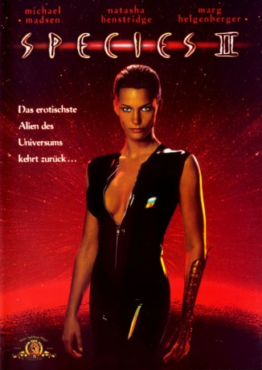

#9011 Species II
 
 IMDB-Wertung: 4.3 / 10
IMDB-Wertung: 4.3 / 10  Tomatometer: 9
Tomatometer: 9  Metascore: 0
Metascore: 0 
Während eines bemannten Raumfluges zum Mars wird ein Astronaut mit Alien-DNA infiziert. Zurück auf der Erde kann er entkommen und verschwindet mit dem Ziel, seine Spezies zu verbreiten. Einige Leute des Teams, das im ersten Teil die Schleimbraut erschaffen hat, wiederholen das damalige Experiment, und schicken die neue Sil los, um ihr männliches Gegenstück zu jagen.
Jahr: 1998
Dauer: 93 Minuten
FSK: 16
Land: USA Studio: MGMTonspuren: DD5.1 - ,
Untertitel:
Auflösung: 1080p (1920x1040) Größe: 7014 MB
Genre: Action, Thriller, Horror, Sci-Fi
Regisseur: Peter Medak
Drehbuch: Dennis Feldman
Soundtrack: Ed Shearmur
Darsteller:
 Michael Madsen als Press
Michael Madsen als Press Natasha Henstridge als Eve
Natasha Henstridge als Eve Marg Helgenberger als Dr. Laura Baker
Marg Helgenberger als Dr. Laura Baker Mykelti Williamson als Dennis Gamble
Mykelti Williamson als Dennis Gamble George Dzundza als Colonel Carter Burgess Jr
George Dzundza als Colonel Carter Burgess Jr James Cromwell als Senator Judson Ross
James Cromwell als Senator Judson Ross- Justin Lazard als Patrick Ross
- Myriam Cyr als Anne Sampas
 Sarah Wynter als Melissa
Sarah Wynter als Melissa- Nancy La Scala als Debutante
- Raquel Gardner als Debutante's Sister
- Robert Hogan als Pentagon Personnel
- Ted Sutton als Pentagon Personnel
- Nancy Young als Tether Console Guard
- Tracy Metro als Prostitute
- Susan Duvall als Woman Shopper
- Lauren Ziemski als Female Teenager
- Bill Boggs als Bill Boggs
 Richard Belzer als U. S. President
Richard Belzer als U. S. President Peter Boyle als Dr. Herman Cromwell
Peter Boyle als Dr. Herman Cromwell- Monica Staggs als Eve Creature Performer
- Matthew Boylan als
- Tim Carr als Soldier
 Gary Davis als Scientist
Gary Davis als Scientist- Frank Faucette als Marine
- Liam Hughes als Paparazzi
- Paul Majors als Springfield Orderly
- Thomas Reid als Maj Gen USMC (uncredited)
- Eric Alan Wendell als Air Force Special Forces (uncredited)
- Baxter Harris als Dr. Orinsky
- Scott Morgan als Harry Sampas
- Henderson Forsythe als Pentagon Personnel
- Gwendolyn Briley-Strand als Biologist
- Valerie Karasek als Biologist
- Jane Beard als Biologist
- Beau James als Administrator
- Irv Ziff als Seedy Motel Clerk
- Melanie Bradshaw als Hooker
- Felicia Deel als Stripper
- Norman Aronovic als Medical Examiner
- Kim Adams als Darlene
- Dustin Turner als Kid at Supermarket
- Andreas Kraemer als Male Teenager
- Donna Sacco als Woman in Crowd
- Sondra Spriggs als Woman with Gamble
- Kevin Grantz als Federal Agent
- Zite Bidanie als Press Agent
- Nat Benchley als Squad Leader
- Mike Gartland als Cobra Pilot
- John C. Pratt als Pilot
Datei: X:\4-Tetralogie(M-Z)\Species\Species II (1998, FSK16, 1920x1040).mkv seit 18.05.2018
Festplatte: HD Collection-3(N-Z)-6(A-Z)
 Es gibt insgesamt 7 Filme in der Gruppe '4-Tetralogie(M-Z)\Species'
Es gibt insgesamt 7 Filme in der Gruppe '4-Tetralogie(M-Z)\Species'